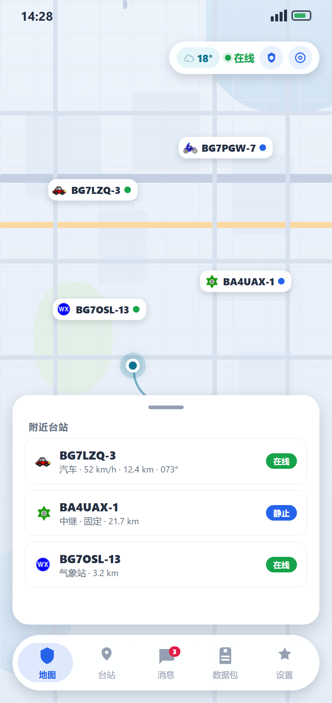

实时地图追踪
高德瓦片 / 高德卫星 / 矢量 / Carto（浅色·深色·航行者）/ OSM（标准·人道）/ OpenTopo / Esri 十多种底图可切。一台站一个标记（v1.6.149 起去掉聚合），也能看轨迹回放，低缩放密度看热力图。
APRS 定位追踪 与 地图
一个业余无线电爱好者用的 APRS 客户端 —— 在本机运行的工具。
不提供、也不预置任何服务器地址：要联网请自行填写 APRS-IS 服务器，
或改用蓝牙 TNC / 声卡音频 / Icom 电台直连。
上面那个数字，是全世界 APRS 台站累计转发过的报文总量 —— 电波穿过夜空，最后都落在这颗星球上，下一格等你来补。
APRSlocus 2.0 已发布 2.0 已发布 · 立即下载 →
📡 周六空中签到
北京时间周六一整天，报文的收件人填轮值呼号 BH6RIZ-6。收到 ACK 就上了当天的签到表。
APRSNETCN OA 是 APRSNET.CN 发起的 APRS 报文签到活动。按北京时间的周六算，一整天都能签到。OA 是 On Air 的缩写。
这一轮由 APRSNETCN | CATHAM 半间猫窝 共同承办。
每周有一个轮值台。报文发给它，它回一条 ACK，你就上了当天的签到表。轮值台每周换一个，呼号也跟着换。
不用报名，也不用到场。
📡 时间与轮值
📮 怎么参加
报文的收件人填 BH6RIZ-6。
先发 CQ CNNET BG7XXX OL62，把呼号和网格换成你自己的。收到轮值台的 ACK 之后，再回一条 U CNNET。
也可以直接发 CNNET BG7XXX OL62，省掉 CQ 那一步。
网格写 4 位或 6 位都认，例如 OL62、OL62AA。忘了写网格的那一条，轮值台会回一句提示，照着补发一次就行。
有话想捎给轮值台，写在网格后面。那句话会跟着你的呼号出现在当天的签到表里。
网络进来的和射频进来的都算，射频优先。射频进来的那一条，会记下经过的中继。
需要合法呼号与执照，也请遵守当地的法规。
📋 当天能看到什么
轮值台收到报文就回一条 ACK。
你的呼号随后出现在活动页的签到表里，网格和到台时间跟在旁边。
签到表和网格图当天就能下载。
🙋 关于这一轮
不计分，没有排行榜，也不得用于商业用途。
流程还会继续调，活动页上写的是最新的。
没通上也没关系，下周六还有一轮。
在 APRSLocus 里打开「消息」页，把收件人填成轮值呼号就能发。
当天的名单在活动页上。打开活动页
全新 UI 2.0：地图打底、悬浮胶囊导航、可拖拽面板。 查看完整宣传页 →

不止是「看台站」——地图、消息、射频、传播与天气，火腿用得上的都在这。
地图与追踪
高德瓦片 / 高德卫星 / 矢量 / Carto（浅色·深色·航行者）/ OSM（标准·人道）/ OpenTopo / Esri 十多种底图可切。一台站一个标记（v1.6.149 起去掉聚合），也能看轨迹回放，低缩放密度看热力图。
专为「边开车边看」设计的导航风格页面：大字号方向 / 距离 / 速度，左侧「附近台站」面板，目标台站居中，Android 与 Windows 都能用。
把当前视图整片瓦片下到本机（断点续传、单区域上限 20 万张），断网、无信号也能看；四级降级保证地图始终可看可点。
通信与网关
一键上报位置，按 APRS 1.0 标准格式发送，自动带上高度、速度、航向和电量，上报间隔可调。
单聊、群聊统一在会话列表里，带 ACK 确认。支持群聊邀请、成员管理、未读角标，中文消息也没问题。
内置多引擎翻译，默认走免费接口、无需任何密钥。收到的和发出的消息都能译，可对照原文，也能在发送前先把自己的输入译成对方的语言。
把射频收到的报文转到 APRS-IS，自动带 qAr / qAR 来路标识；带环路防护（含 TCPIP* 或已有 q 构造的报文绝不送回），同一帧 30 秒内只注入一次。可选双向模式会把网络侧发给「刚在射频上听到过」的台站的消息送到射频。
台站与数据
接入 aprs.org 官方设备库，从报文目的呼号识别台站所用设备（厂商 + 型号 + 车台 / 手台 / 跟踪器 / App / 网关…）。列表可筛状态、类型、设备类别与具体型号；详情页可跳 QRZ 呼号库与 aprs.fi 看轨迹。
原始报文用等宽字体展示，长按可复制；解析结果按位置 / 消息 / 气象 / 状态分类。内置分级日志方便排查问题。
互联网（APRS-IS）、蓝牙 / 串口 TNC（KISS）、声卡音频 AFSK 1200（Bell 202 软 TNC）、Kenwood 航点 $PKWDWPL（只收不发），以及 WLAN 电台直连（支持 IC-705 / IC-9700 / IC-7610 / IC-905 等 Wi-Fi / 以太网型号，CI-V 控制与局域网音频）。多条链路可以同时收报文，发射来源单独指定一条。
天气面板（动态背景跟随实时天气强度变化）、台站统计面板（最近上报 / 最远距离 / 报文速率），以及荣誉墙。
一键导出 ADIF —— 业余无线电通用的日志交换格式，频率可自定义，导出后可直接导入其它日志软件。
短波面板与独立组件：SFI / Kp / A 指数、黑子、X 射线、太阳风，四个波段对的「日 / 夜」条件一眼看清；数据来自 hamqsl.com（N0NBH），30 分钟缓存。
系统与体验
自动连 APRS-IS 公共服务器，TCP / WebSocket 都支持，断线按 8 → 16 → 32 → 60 秒渐进重连。Android 用前台服务保持在线。
应用内检查更新，GitHub / GitCode 两个渠道可切，按平台分流下载，也能装历史版本。
简体中文 / 繁體中文 / English / 日本語 / Indonesia / Español 可切换，支持深色模式和自定义主题色，界面可缩放 85% ~ 130%。首次启动有六步引导。
Android 桌面小组件：天气（4 档自适应尺寸）、短波传播、系统状态三套；组件不自己联网，由应用单向推送快照，省电可控。
主题不只是换色：颜色、图标、文字、背景图都能改（17 个颜色令牌），可导出成 JSON 分享；设置与数据可整体备份，换机一键导入。
Android 与 Windows 有现成的安装包，下载就能用。
第一次打开会进引导向导，按步骤填完就能连上 APRS-IS 并开始上报位置。
中文 / English / 跟随系统
建议先试用演示模式
如 BG7LZQ-3，选择 SSID 后缀
汽车 / 房屋 / 人 / 气象站 …
按国家 / 地区选择接收台站
填入 Passcode，完成即自动连接
-1 即可连接，但未验证的 Passcode 无法正常收发消息。建议到
APRS Passcode 查询 生成你的专属 Passcode 后填入。
遵循 APRS 1.0 标准，兼容主流 APRS 软件，图标全部来自官方符号表。
BG7LZQ-3>APALOC,TCPIP*:!2148.90N/11049.14E/> /A=000328 090/050 Bat:70% APRSlocus v1.6.18APALOC — 标识本台站使用 APRSlocus/A=000328 — 高度（英尺）090/050 — 航向 / 速度Bat:70% — 电量近期重点版本的主要变化（中间数十个以修复为主的版本已合并，完整记录见 GitHub Releases）。
SAT=nn 是可选的备注字段，来源是正在供位的那个来源 —— 手机 GPS（Android 读参与定位的颗数）或外接 GPS 模组的 GGA 语句。默认关；来源不提供这个值时不发，而不是发一个会被读成「一颗星都没有」的 0。GSA 的 2D / 3D，也会明确说「模组没报」）、模组时间（UTC）、触发语句与最近一条原始语句都在明面上；龄期（「N 秒前」）每秒刷新，断流后一眼能看出「已经多久没有新定位」。RMC / GGA / GLL / ZDA / GSA / VTG），作为本机位置，只收不发。位置优先级：模拟位置 ＞ 外接模块 ＞ 佳明手表 ＞ 手机 GPS。audio 元素）并不会自己安静。现在退出前先把声音按停、退场动画里再把整页腾空，切到后台也同样按停。stream，后端按普通请求回一整段 JSON，应用判定「没拿到流」后又把同样的请求发了一遍 —— 每轮白等一倍时间、白花一倍 token。现在流式请求真的带 stream：一次请求、边收边显示；后端不认这个字段时照旧自动退回整段式，不会少一句回复。https://… / www.…）自动变成可点链接，台站列表 / 台站详情 / 地图信息浮窗三处一致。>APRSlocus CONNECT …、再发一帧你的自定义状态，白占一帧还让 aprs.fi 上的状态在两者间反复闪。现在只发一帧、谁有内容发谁：填了自定义发自定义，没填才发内置默认帧；CONNECT 身份帧只在连上的一瞬间发一次。自定义帧万一写失败仍会自动补发，状态不会被 CONNECT 顶掉。stream、或 Web 平台）时自动退回整段请求，再用打字机效果补上逐字观感 —— 不会少一句回复。设置页「接口」折里可开关（默认开）。360°。strategy_add_point / strategy_add_line 等新工具，元素立刻落到每个人图上并广播给群；也能用 list_strategy 看清图上有哪些元素、按 id 修改或删除，或 strategy_clear 一键清空。只读的 list_strategy 免确认；会发 APRS 帧的写操作仍需「允许发送 / 允许修改设置」权限与逐次确认。WIDE1-1,WIDE2-1 之类的射频路线无处可填。现在该页补上「射频中继路径」输入框，与 TNC / 音频页同一个键、同一个语义（留空 = 不指定中继），改完立即生效。aprslocus）与香港（aprslocushk）两个 bucket，香港走自定义域 aprslocushk.oss.theez.top。.apk / .ipa 下载一律返回 ApkDownloadForbidden（.exe 不受影响）。改为上传时给这两类对象加 .bin 后缀、索引里的下载地址随之指向 xxx.apk.bin，而资产名不变 —— 客户端无需改动。发版自检现在会真去下每个资产。aprslocus.oss-cn-guangzhou.aliyuncs.com）取包，国内可达性好。默认不启用，需在更新页手动切换。publish-oss，把安装包与一份 GitHub 同格式的 releases 索引一并上传；凭据只从 GitHub Secrets 读取，不写进仓库。updateChannelBases，更新页与启动提示共用一份，避免漏改。清零通道走 HTTPS + 内置自签证书钉扎（只钉交付服务器那一个主机，其余渠道仍走默认信任链），传输加密、中间人无法篡改，且无需域名 / 备案 / 买证书。默认仍是 GitHub。flutter_windows.dll 与 data/，双击无反应）→ 改为单文件安装器并加 if-no-files-found: error；iOS 测试版产物名会丢掉fork 标识 → 保留版本后缀。另：v2.0.50 已发布，本次带新功能，版本递增到 2.0.51。onEditingComplete，而它只在回车时触发、失焦不触发。现在失焦即落定，回车仍可立即确认；输出幅度只重建调制器、不中断接收。IC-705 的电台参数与 TNC 串口线速同款问题一并修好。输出幅度这个决定是否削顶的增益在界面上根本改不了，而两条告警都写着「请调输出幅度」。发射卡现新增「输出幅度」输入框，改完立即生效（只重建调制器，不打断正在进行的接收）。同时标明当前发射来源（音频连上 ≠ 从音频发），并提示软件不会按电台 PTT（需 VOX 或数据口键控）。Flexible，文字短时会留剩余空间、箭头左飘；改成紧份额 Expanded 后箭头恒定贴右，说明列起点也随之对齐。groupChatAllowed 放开为始终可用，射频（TNC / 音频）下策略帧改用带 ack 格式，借队友的标准自动 ack 判断送达；90 秒未确认视为「不确认」（队友可能关了自动 ack），可在策略地图页手动重发。$M，超长的线自动分片，任何帧都 ≤ 67 字符）；元素支持跳转导航与编辑附带信息，可「清空图层」同步全群。天地图 矢量（vec）、天地图 影像（img）、天地图 地形（ter）。天地图的底图本身不含地名，文字在单独的透明注记层（cva/cia/cta），因此每张底图都会叠上对应注记（矢量叠 cva、影像叠 cia、地形叠 cta）；底图与注记分开缓存、离线时一起下载，不会出现「有图无地名」。天地图实测为 WGS-84（与 Esri/OSM 影像零偏移），因此不做 GCJ 纠偏，可与 OSM 互为兜底；瓦片支持到 z18。Key 走构建期注入（CI Secret TIANDITU_KEY），源码不落 key；未配置时自动退到 OSM，地图照常可用。OpenTopo 地形（带等高线，从「其他」移入）、Esri 地形(等高线)（路网 + 地名 + 等高线，最像纸质等高线地形图）、Esri 地形浮雕（纯浮雕，看整体地形最干净）、Esri 山体阴影（只看沟壑走向）。四张都免 Key、可离线下载、与 OSM 互为兜底；它们本就是 WGS-84 国际瓦片，因此不做 GCJ 纠偏，不会整体偏位。scl=2）给 512px，Carto / OSM / Esri / 腾讯 / 高德卫星都只有 256px —— 图源本身不是主因。真正的问题在选层级：地图用 zoom.floor() 取瓦片级，于是整档 [z, z+1) 都取 z 级瓦片，越接近 z+1 源图被拉得越大（z=12.9 时 1.93×），再乘屏幕像素密度 2~3 倍，物理上放大 4~6 倍，必然糊。改用 zoom.round()：放大封顶在 √2≈1.41×，后半档转为缩小，对所有图源都生效。ReportActions（自动上报开关 + 立即上报按钮），删掉重复实现与「上报成功」的假提示；设置里统一叫「自动上报」并加了指回主界面的说明。IMPORTANCE_LOW）的常驻通知上，系统不为它震动也不弹横幅 —— 手机放兜里（摔倒或开车时最常见的状态）根本察觉不到。强提醒走单独的高优先级通道；Android 需要 VIBRATE 权限（已加）。ts(12)，其默认取色是深色，压在同样是深色的提示条底上 —— 深字叠深底，一个字都看不清。改为显式白字（设置页里同类的一处一并修）。rotate.aprs2.net / 14580 / -1 —— 软件不预置、也不推荐任何服务器地址；重新运行向导时仍会回填你保存过的值。HitTestBehavior.opaque），改成 translucent 后标记与地图都收到指针 —— 点 = 选中台站，拖动/捏合 = 地图；栅格与矢量两套地图都改了。矢量地图的热力图失效也修了：原来被 !_usePluginMap 整个排除，现在矢量地图也画热力（用 flutter_map 相机投影）。「从收藏台站开始」新建会话黑屏也修了：它会先把「新建会话」对话框关掉，选完人后又关了一次，把整个消息页弹掉 —— 现在只有对话框还开着时才关。手动选点（模拟位置）没有系统通知也修了：手动设坐标会停掉前台服务却没把保活起回来 —— 现在会起回来。key 按身份复用 + 台站密时不画呼号标签。瓦片拖动不丝滑也修了：手势期间压住新瓦片的下载与解码，手停再补。数据包页每行重播淡入动画（时长还随行号无限增长）也改成只播一次。TEL k=v …：应用以后加字段不用动固件（不认识的键静默跳过；空值不发，盒子写 --，绝不显示假的 0）。另：IS rx-only 现在三处写清原因（首页 set pass、SYS 页的服务器原话、应用事件日志）并给出修法（pass 填基础呼号的 passcode）；倒计时改为盒子本地每秒递减，状态推送收紧到 5 秒。EVT … 事件与命令回执一并显示，可一键复制。这一版还把手机这侧看到的东西推给盒子：自己的速度/方位/海拔/有没有定位/APRS-IS 通不通/未读消息，以及附近台站列表（按距离，最多 8 条）—— 盒子新增的 PHONE 页显示这些。盒子只跑蓝牙（自己不上 APRS-IS）时，「旁边有谁」在它上面本来是空的，现在这份数据能顶上去。两条刻意的规矩：盒子不是「数据来源」（它自己就上 APRS-IS，本应用再收一遍只会重复），且绝不自动发射 —— 信标与状态报文必须人点，自动的只有本地的位置喂养与状态推送（都不上射频）。armeabi-v7a 是什么、该选哪一个，等于把应用该做的事推给用户。现在更新页按本机 CPU 自动挑好对应的包（Abi.current()，无需原生通道）并直接在应用内下载：32 位老机型自动拿到 32 位包、模拟器拿到 x86_64，不会再出现「下完提示与设备不兼容」；认不出架构时回退到分架构之前的行为，所以也不会变成「挑不到包」。.apk，而资产按名字升序返回，. 比 _ 小 —— 所以它永远排第一，这条不变量有专门的检查与自测盯着。_armeabi-v7a。顺带修掉一处显示问题：下载中以前英雄卡与下方卡片各画一条进度条（同一个下载看着像两个任务），现在只留一条。livetrack.garmin.com、国区在 livetrack.garmin.cn。此前只认国际区域名 —— 国区用户从佳明 App 分享过来只会看到「没有找到 LiveTrack 链接」，而且连一次网络请求都没发出，功能是静默失效的。现在三种域名写法都认（.com / .cn / .com.cn），没有 https:// 的一段链接也认（从聊天窗口里复制出来的常常就是那样），并补了两处兜底：解析时会在整篇文档里找 trackPoints（国区与老版分享页不是 Next.js 的流式块形态），抓取时照旧跟随 301 跳转。.SF NS Text）—— 这个名字解析不到时，中文就没有可回退的字体，于是地图页、设置页的中文整片乱码。现在 macOS 交回系统默认字体（本来就是 SF，观感一致，但「挑字体 + 中文回退」交给系统做），并把中文回退表补全（PingFang SC / Microsoft YaHei / Noto Sans CJK SC …）；等宽区域（报文、日志、荣誉墙）也补上了中文回退 —— 等宽字体同样不含中文字形。新增判据：不许再出现那个私有字体名，回退表必须含三平台的中文字体。SettingsPageShell.state 只管引导卡，并不让页面跟随状态刷新）。修：速度档编辑弹层的「保存」被三大金刚键压住 —— 底部现在同时让出键盘与系统导航栏，取值取 padding 与 viewPadding 的较大者（有些 ROM 只报后者）。STEPS=，默认关）。设置页荣誉墙上方新增运动排行榜：今日步数排行，点一行进台站详情。自己不开上传就看不到榜单 —— 榜上每个数字都是别人主动发出来的，只收不发不该白拿别人的。页面上写明这只是「你听得到的邻居」而不是全网排行。.part 再原子改名，断掉不会留下一个装不上的包。HR= 一致：蓝牙心率带或佳明 LiveTrack），历史轨迹详情页多了心率 / 速度 / 里程三条折线，可逐条开关、也可整块隐藏；播放时有竖起指示线对着当前位置，心率那一栏还显示当天的最低–最高。没有心率读数的时间段曲线会断开（不连成直线）。一天最多 4 万个点，曲线进页时一次性分桶到 240 个点，播放时不掉帧。2.0.5 去比 tag 的 v2.0.5，永远不相等），现在比较时忽略 v 前缀；⑥ 更新渠道默认改为 GitHub（更新页仍可一键切回镜像）。000/000 PHG2130 /A=000033），用参考实现 aprslib 解出来 phg 完全缺失、PHG2130 被当成普通备注文字 —— 也就是说第三方地图上看不到覆盖范围，这个功能等于没做。根因是两个独立的坑：① APRS101 把 PHG / /A= / CsT 定义为固定长度的数据扩展，必须紧贴符号、彼此之间不用空格（真实台站都是 …ErPHG1460/A=000071 这样）；② CsT 与 PHG 争同一个「注释开头」，解析器先匹配 ^\d{3}/\d{3}，一旦命中就只再看 DF 测向报文，根本不再去找 PHG，所以哪怕紧贴，只要 000/000 在前 PHG 也读不出来。!2155.17N/11052.40EbPHG2130/A=000033 Bat:22%（空格只出现在扩展块与备注之间）。一个取舍：同时填了 PHG 的移动台，aprs.fi 上就没有速度/方位角了 —— 两者都要「注释开头」这一个位置，无法共存；没填 PHG 的台站一切照旧。另把信标报文的第三方兼容性测试纳入 CI，这类「编译过、analyze 绿、第三方读不出」的问题从此有测试兜底。PHGphgd，留空则完全不发。量化照规范做：功率只取不超过实际值的最大档（25 W 报 25、30 W 也只报 25 —— 报大了等于虚报覆盖范围），天线高度按 10×2ⁿ 英尺取档；设置页把真正会被编进报文的结果回显出来（量化过程用户看不见，不摆出来就无从知道到底发了什么）。报文里的位置也照规范来：PHGphgd 紧跟符号（!坐标/符号 之后，排在 /A= 海拔与其它备注文字之前），与标准报文 …:!2216.45N/11113.90ErPHG5950 形状一致 —— 第三方解析器按「注释开头的数据扩展」识别 PHG，插在后面就读不出来。APRSlocus CONNECT vX.Y.Z 平台 在线帧。状态报文是独立一帧（> 开头、不含坐标、不会移动你在 aprs.fi 上的位置），所以没有定位也能发。发送时一律直接读输入框当前内容，不依赖输入事件的时序 —— 中文输入法组合输入时曾出现「明明填了，却发出默认帧」。此外新增手填海拔：留空跟随定位（默认行为不变），设置页显示当前将发出的 /A=aaaaaa 片段。--，把「没有」和「没收到」显示成同一个样子。@video 标记可在应用内播放（Android / iOS / macOS；Windows / Linux / Web 回退为在浏览器打开）。旧版本读到那行只会当普通文字（仍是可点链接）。positionSourceNow），两处都写明优先级：模拟/手动位置 › 佳明（手表有实时数据时）› 手机 GPS，上报页的选项也改名成「手机 GPS」（与设备页同名），并显示「当前使用：…」EXTRA_TEXT，而不少应用（部分佳明版本 / 浏览器）把文本放在 clipData 里 —— 读到 null 就整条静默，这正是「时好时坏」的机制；② 读不到文本时直接静默返回，用户既没提示也没日志；③ 冷启动竞态：应用启动时那次分享可能在界面注册回调之前就到达，回调为 null 被丢掉（就是「跳转之后还是没有反馈」）—— 现在改成「有回调就调、没有就存起来」，界面起来后主动取一次。顺带把识别放宽：短链码长度不限 + 大小写不敏感BA3RZL 那组标签到胶囊 6→8gar.mn/…）之前根本进不来。佳明 App 的「分享」给的是短链，而应用只认长链（livetrack.garmin.com/session/…/token/…）、Android 分享入口也只放行那个域名 —— 于是「分享 → 选 APRSlocus」什么都没发生。现在两种链接都认（含只复制到 gar.mn/xxx 没有 https:// 的情况），抓取时跟随 301 跳转；写日志前把 token 打码 —— 分享链接本身就是读取实时位置的凭据HR=nn，没有读数时什么都不发（发 HR=0 会被读成「心率 0」）。与 TNC 的蓝牙通道不冲突：TNC 走经典蓝牙 SPP、心率走 BLE GATT，本来就并行；并且绝不做经典蓝牙发现（那会打断 TNC 的 SPP 连接），同一台设备被两条链路抢占时会直接拒绝并说明原因contain（怕裁掉火山），但卡高有 300 上限、容器宽到 600，于是任何 ≥600 宽的屏幕上都会走：照片缩成中间一条、两侧各空 75px，横屏时 Logo 卡正坐在左边空白上（就是「logo 背景没填满」）；改成 cover + topCenter，铺满并保住雪顶；③ 消息页换栏原来按朝向判（只要横屏就走双栏），而 2.0 横屏把消息页装进≤560 的左面板（手机常 200~280），固定 280 的列表栏把会话区挤成负宽度 —— 现在只看可用宽度换栏、列表栏宽度跟着容器走，并新增窄容器行内降级（呼号可省略 / 群聊操作胶囊换行排，一个都不藏）topBase+46，正好糊住「沉浸地图」入口。先改成同一竖列顺序排布，但按真实几何量过发现它与右上图例只差 1px 就相交（靠「差一点」压住的布局换个语言/缩放必翻车）—— 最终地图页与沉浸地图改用一次性底部弹层：全屏地图四周都是浮层，浮卡片找不到一定不重叠的位置；弹层只在页面真的在前台时才弹check_landscape_layout.py 的判据从「数 leftInset 出现次数」改成按结构判 —— 数实现细节会误伤重构（这次就报了个假失败）tool/check_guides.py 静态检查：引导表 ↔ 6 语言文案 ↔ 生成产物 ↔ 页面接入点四处一一对应（漏任一处都不会编译失败，只会「引导永远不出现」）；该检查写完当次就抓出三处真问题(宽 × 0.64)，196~300），超宽屏改「整体装入」，不再把火山裁掉；桌面宽屏下封面与正文套同一个限宽容器（600）reverse() 只改状态、值要下一帧才动，于是底下的页面整整透出一帧（开的材质或背景图时才看得见）从 Passcode 到后台耗电，能想到的问题都写在这里了。还有 23 题按主题分组的完整版，见 帮助中心。
绝大多数情况是 Passcode 未验证。密码填 -1 只能连接，不能正常收发消息。请到 APRS Passcode 查询 生成自己的 Passcode 并填入「连接设置」。登录后若服务器返回 unverified，主页顶部会出现黄色警告横幅，点击「去设置」即可直达修改。
在引导第 6 步或「设置 → 连接」中，用你的完整呼号（含 SSID 后缀，如 BG7LZQ-3）查询生成 Passcode 后填入即可。
应用内置渐进式重连（8 → 16 → 32 → 60 秒）。若持续失败，检查网络、服务器地址与端口是否被拦截，或在「连接设置」换一台服务器后点击「重新连接」。
检查「接收筛选」是否勾选了目标国家 / 地区，并确认接收范围（经纬度 + 半径）覆盖你的位置。默认只接收中国（B 开头）台站。
Android 端使用前台服务持续定位以保持 APRS 在线，可在「定位 / 信标」设置中调整上报间隔，或关闭信标上报、按需手动上报来降低耗电。通知栏可一键「退出」应用。
建议在「显示 → 地图类型」中切换为矢量地图（无需 API Key，兼容性最好），或使用 Carto / OSM / Esri 等国际图源。
自 1.5.2 起 Android 使用正式 release 签名，CI 与本地签名一致，直接覆盖安装即可。若从更老版本升级，请卸载后重装。
Star、提 Issue、发 PR，或者直接进 QQ 群 / Discord 唠嗑，都欢迎。
感谢每一位让 APRSlocus 变得更好的人。
想加入列表？翻译、提 PR 或报 Bug 都可以 —— 查看贡献指南 →
与同行者的网站对望，感谢互相链接。